peu·ze·len
(peuzel) Langzaam en met smaak eten.
Eten, happen, knabbelen, snaaien.
Samen verrassend en ongedwongen eten, met groenten in de hoofdrol. Bij culturele vrijhaven de Nijverheid in Utrecht.
- do & vr vanaf 17:00
- za & zo vanaf 12:00
- Nijverheidskade 15 Utrecht
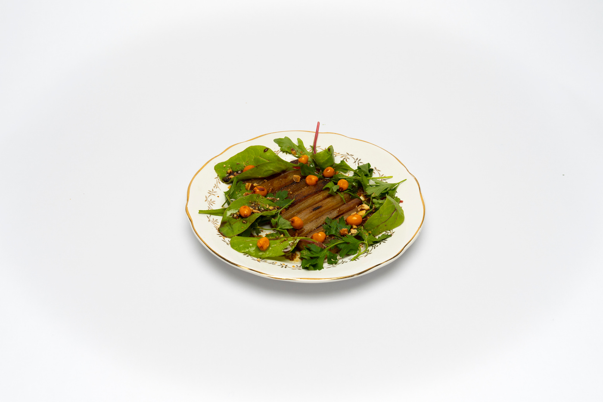
Gerechten om te delen
Peuzel is samen verrassend en ongedwongen eten, bij de culturele vrijhaven de Nijverheid.
We koken met groenten in de hoofdrol, maar houden ook zeker van een stukje vlees of vis. Waar mogelijk maken we duurzame keuzes en koken we seizoensgebonden. Met passie voor koken maken we gerechten om te delen, vrij van opgelegde grenzen, en doen we gewoon wat we het liefst willen.
Bij Peuzel ben je op een unieke plek waar je je kan laten prikkelen met uitgesproken smaken. Eet samen en geniet!
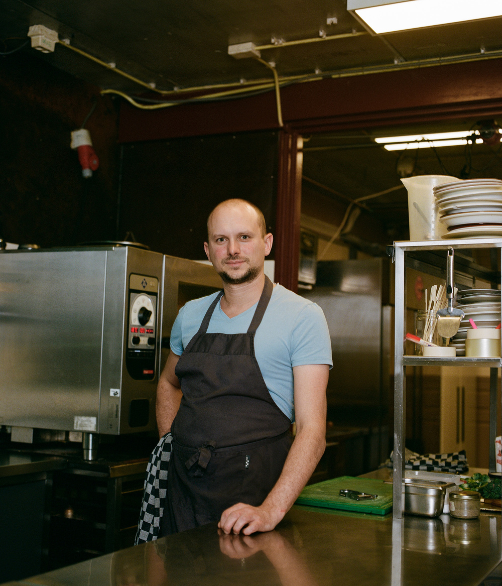
We koken met
- verse groente uit het seizoen
- vlees met een verhaal
- vis uit de Noordzee
- kazen uit Nederland
- bostelbrood van de Brakkerij
- smaakmakers uit verschillende wereldkeukens
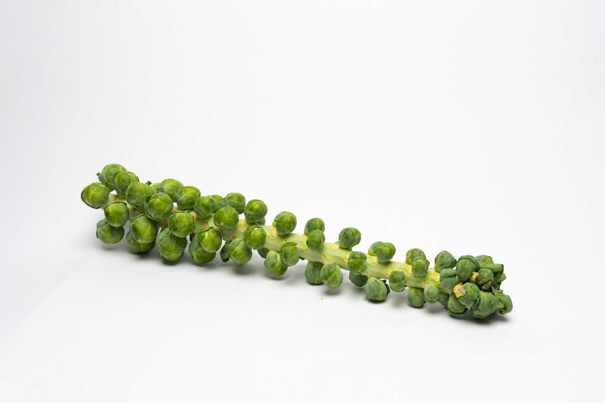
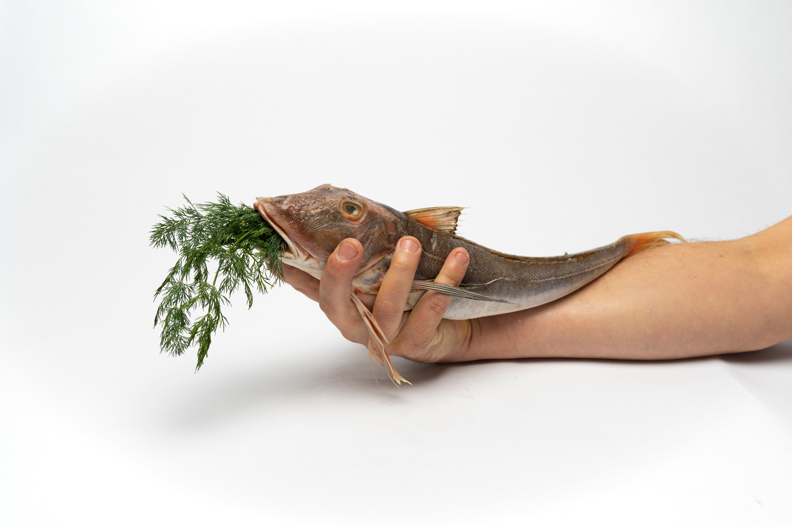
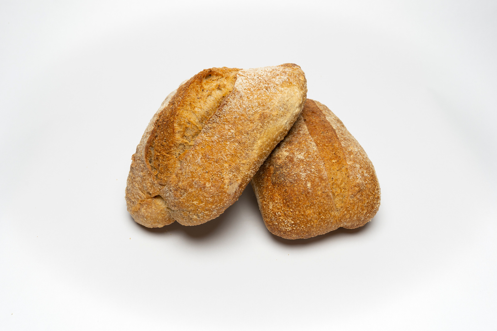
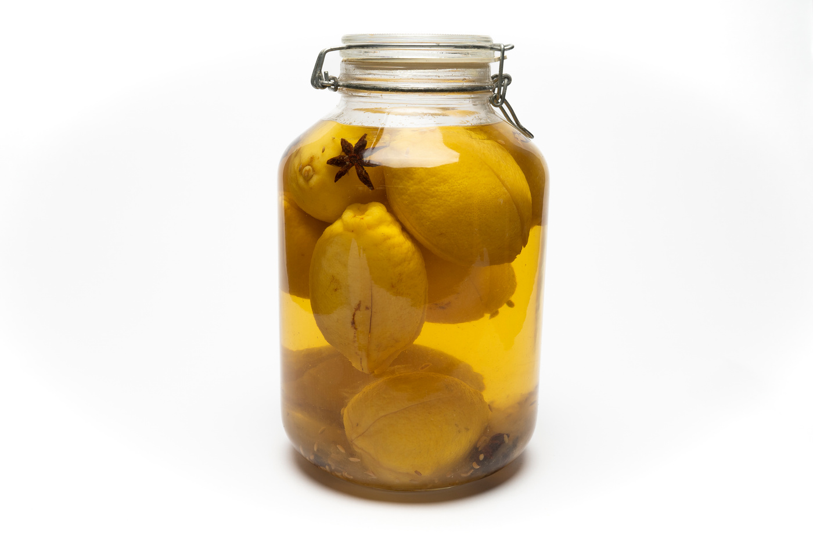
Naast ons Peuzel-menu kun je natuurlijk ook langskomen voor een lekkere borrelhap, een dikke tosti-lunch of een vette burger voor een optreden. En we ontvangen ook groepen en partijen: voor ieder wat wils!
Winterkaart
De kaart wisselt met de seizoenen. Dit is wat er nu op tafel komt.
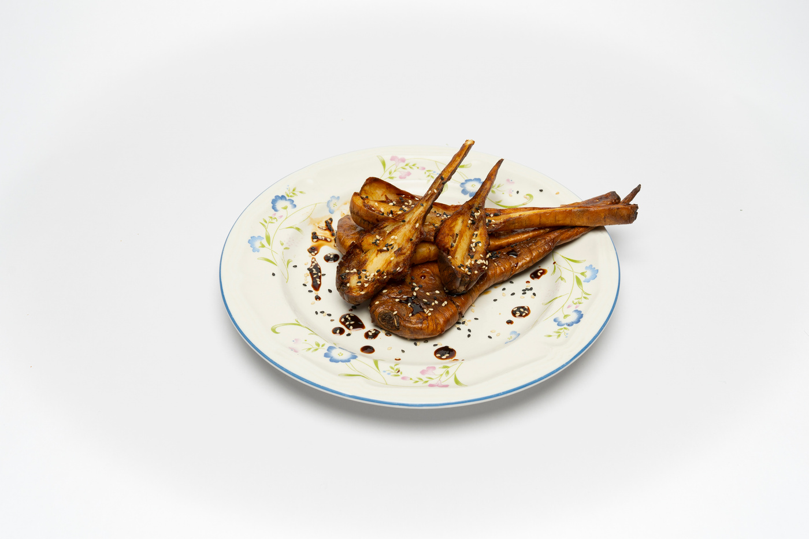
- Dagsoepwisselend, altijd vegan7
- Bostelbrood met dipsbrood van De Brakkerij7
- Turkse dumplingsmet yoghurt-dip7,80
- Gefrituurd bio buikspekketjap, steranijs12,50
- Verse frietgistmayo, za'atar6
- SMIKKEL-burgervega-kip, gochujang, bostelbol9
- Gepofte auberginemet de Peuzel paddenstoelensaus9,50
- Gyros met oesterzwampita, yoghurt, rode rijst15,50
- Gyros met bio kippita, yoghurt, rode rijst17,50
- Daghapaltijd vega, zie het krijtbordvanaf 15,50
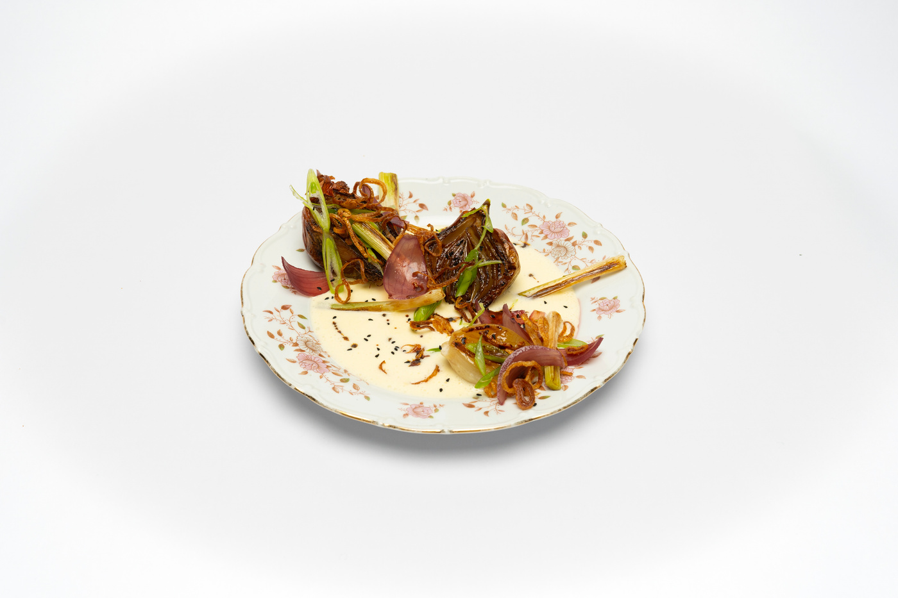
- Dagsoep6,50
- Pompoen-focacciafeta, rode ui8,90
Tosti
Van bostelbrood, met zoetzure groenten en bbq-tomatenketchup.
- Indiase dahlvegan7,50
- Drie boerenkazen7,80
- Ham-kaas8,50
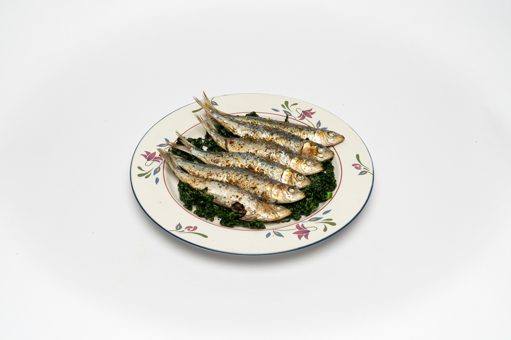
- Cajun popcornzoet, zout en pittig3,25
- Curry chipshandgebakken door onze groenteboer3,50
- Dolmamet rijst gevulde wijnbladeren4,50
- Gemarineerde fenegriekkaasyoghurt, peterselie6,80
- Utregse vega bitterballenvan oesterzwammen, gekweekt op oud koffiedik7,80
Blikken
Lekkers uit blik, met pita.
- Sardientjes7,50
- Ganzenrillette7,50
Zin in meer blik? Werp een blik in onze voorraadkast.
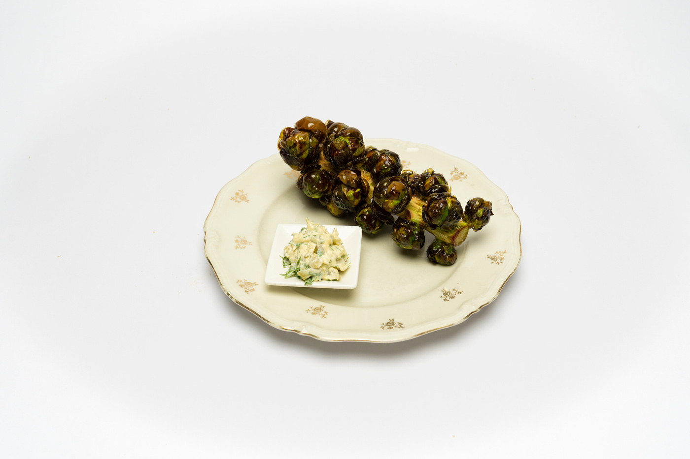
- Brownie of boterkoek4,25
- Yoghurt-vijgenblad-ijs4,50
- Pure chocoladecrème met tahin7,50
- Cheesecake duindoornbes7
- Oudwijker kaasplankItaliaanse kazen, gemaakt in Benschop10
Prijzen in euro's. Allergie of dieetwens? Laat het ons even weten.
Reserveren
Reserveer een tafel tot en met 6 personen. Met een grotere groep? Mail ons op info@peuzel.nl.
Smaken verschillen!
Met een groep
Met een groep van 20 personen kun je verschillende ruimtes op het terrein van de Nijverheid huren voor een lunch, borrel of diner. Mail ons voor de mogelijkheden.
Tip: kijk ook in de agenda van de Nijverheid. Combineer een optreden met een hapje bij Peuzel.
Wanneer we open zijn
Peuzel
- maandag t/m woensdag
- gesloten
- donderdag
- vanaf 17:00
- vrijdag
- vanaf 17:00
- zaterdag
- vanaf 12:00
- zondag
- vanaf 12:00
De Nijverheid
- ma, di, wo
- 12:00 – 18:00
- donderdag
- 12:00 – 00:00
- vrijdag
- 12:00 – 01:00
- zondag
- alleen open voor programma
Op maandag tot en met woensdag kun je bij de Nijverheid terecht voor koffie, lunch en borrel; Peuzel is dan gesloten. Tijdens het culturele programma is de Nijverheid ook open (zie hun agenda).
Zo vind je ons
Peuzel, bij de NijverheidNijverheidskade 15
3534 AZ Utrecht
Er zijn twee ingangen naar het terrein van de Nijverheid: aan de Nijverheidsweg en aan de Nijverheidskade. Op het plattegrondje zie je waar je fiets of auto kunt parkeren.
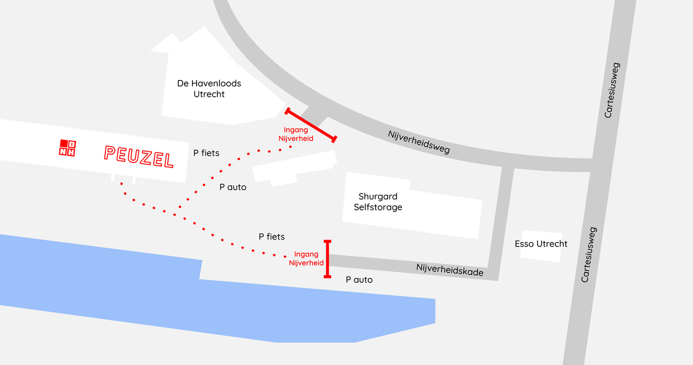